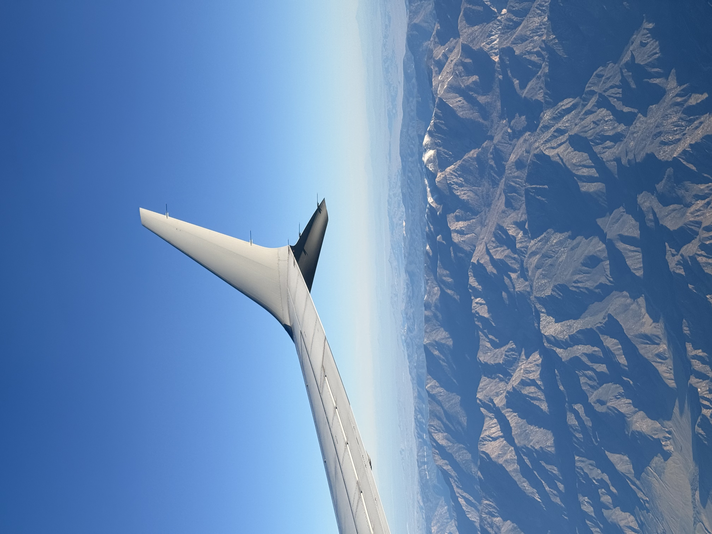
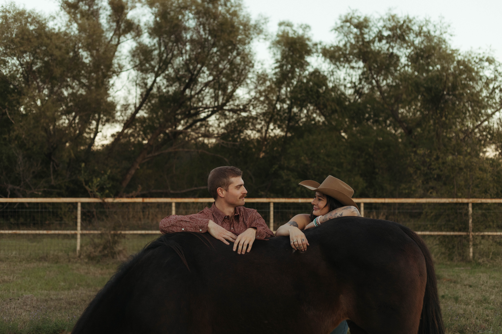
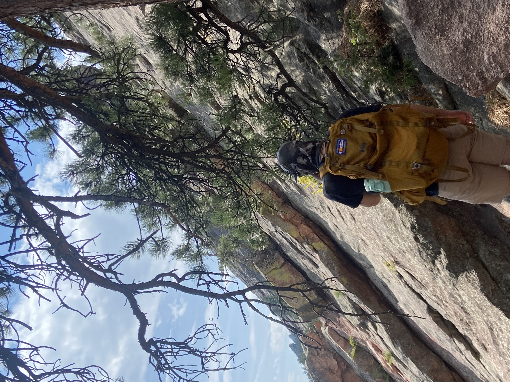

ABOUT ME
I'm an outdoor enthusiast, drummer and animal lover.
Work

I have worked for one of the world's largest airlines for eight years now. Because of this I have had the privilege of traveling to many different places around the world and been able to embrace different cultures while having life-changing experiences along the way. Before I leave this position for the tech industry I am hoping to take trips to Japan and England as those are two places I have always desired to visit.
Personal Life

I am married to an amazing woman named Angela. We have so many similar interests but it's our differences that make it fun. I come from a heavy metal music background while she is a senior paralegal by day and a horse trainer by night. Above is a picture of us with one of our horses, Molly.
My Passions

I am an outdoor enthusiast at heart. In my spare time I love rock climbing, hiking or learning anything I can about animals. I'm also a heavy metal drummer! As of right now my goal is to find a dream job working for the National Park Service but I will be thrilled getting my foot in the door anywhere.